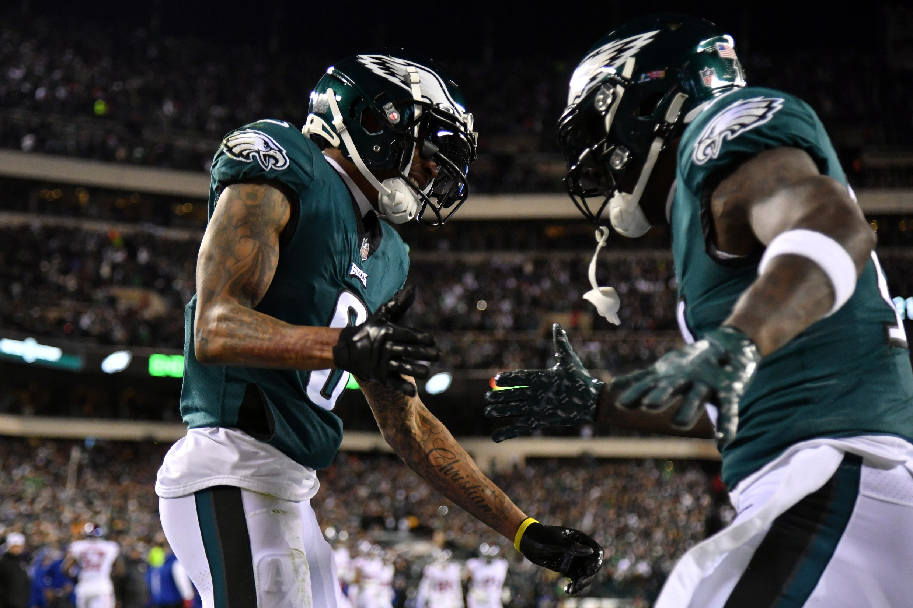
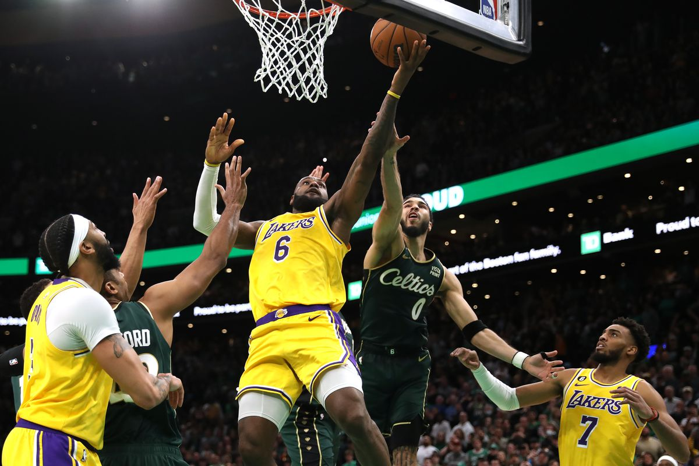

Home
NBA
NFL
Sportaholic: Latest Scores and News
 
Developing Headlines
NBA admits Referees missed contraversal foul call on LBJ at the end of regulation last night versuus Celtics
Max Homa gets the win at Torrey Pines finishing twelve under Saturday
Jim Harbaugh announces he will remain as Michigan head coach amid NFL rumours
NFL insider Adam Schefter announces Chiefs TE Travis Kelce is a full go for todays game after expierencing back spasms all week
Upcoming Games
Sport
Teams
Date/Time
Football
49ers @ Eagles
Today @3:00 EST
Football
Bengals @ Chiefs
Today @ 6:30 EST
Basketball
Pelicans @ Bucks
Today @ 5 EST
Basketball
Clippers @ Cavs
Today @ 4 EST
Sports survey
Name:
What sports do you like?
Basketball
Football
Baseball
Curling
how often do you watch sports?
Daily
Weekly
3 hours daily
1 hour Daily